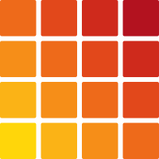

About
I am a second-year B.Sc. student in Computer Science and Engineering at Delft University of Technology, after a first year in Artificial Intelligence at Beijing Normal University.
I study the reliability and factuality of LLM agents under social pressure, interpretability, and multi-agent systems: what models represent beneath what they say, and how far we can trust the numbers we measure from them.
- Hidden beliefs of conforming agents. In an Asch-style debate, agents that give in to a unanimous majority can still represent the premise behind their original answer: an unstated bridge entity, read from the residual stream with the Jacobian lens. With Peng Zou.
- Reliability of stochastically trained models. How far difficulty scores, representation measurements and leaderboard gaps hold up across seeds, replicate populations and prompts. With Yifeng Li.
- Auditable LLM reasoning. Markov logic networks that combine LLM confidence scores with soft and hard logical constraints, supervised by Prof. Jie Yang.
- High-frequency quantitative trading. Founded

Akanezora Capital, a trading firm with substantial returns.
News
-
Measured or Real?, joint work with Yifeng Li, is on arXiv.
-
First on the solver leaderboard of The Last Math Competition: 193 conjectures resolved, each formalized in Lean 4.
-
Silent Dissent, with Peng Zou, is on arXiv, with code and pre-registration.
Publications
* Equal contribution.
-
Preprint
2026Silent Dissent: LLM Agents That Yield to the Majority Still Represent Their Original PremiseWhen an agent in a multi-agent debate drops a correct answer to join a unanimous majority, has it changed its mind or only its statement? Decoding the unstated bridge entity of two-hop facts from the residual stream, we find that in three of four models, agents who gave in still represent their original premise.
@misc{ni2026silentdissent, title = {Silent Dissent: {LLM} Agents That Yield to the Majority Still Represent Their Original Premise}, author = {Ni, Ziang and Zou, Peng}, year = {2026}, eprint = {2610.02702}, archivePrefix = {arXiv}, primaryClass = {cs.CL}, url = {https://arxiv.org/abs/2610.02702} } -
Preprint
2026Measured or Real? When Model-Derived Measurements Can Be Corrected or ComparedNumbers computed from trained models shift with the training seed and the prompt. We give a bounded correction for correlations under replicate noise and simultaneous intervals that name a winner only when every prompt protocol agrees, and show that aligning embedding coordinates across seeds makes per-dimension measurements reliable.
@misc{li2026measured, title = {Measured or Real? {W}hen Model-Derived Measurements Can Be Corrected or Compared}, author = {Li, Yifeng and Ni, Ziang}, year = {2026}, eprint = {2610.38015}, archivePrefix = {arXiv}, primaryClass = {cs.LG}, url = {https://arxiv.org/abs/2610.38015} }
Projects
-
The Last Math Competition
First on the solver leaderboard. As of 19 October 2026, 193 conjectures resolved (16 proofs, 177 disproofs), all first solves, each with a LaTeX write-up and a Lean 4 formalization that passed full audit.
-
Passnote
A tiny mailbox for Claude Code agents on different computers, so that agents working on one project can pass short notes to each other directly. One standard-library Python server with SQLite, and a plugin with MCP tools and hooks on each machine, off unless a session opts in.
-
Optiver Trading Hackathon
An automated options-trading algorithm with Black–Scholes pricing and Greeks.